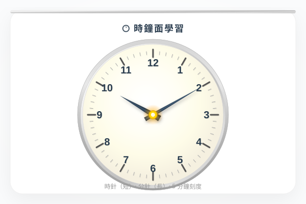

| # | 題目 | 答案 | 類型 |
|---|---|---|---|
| 1 | 1.5 小時 = ＿＿ 小時 ＿＿ 分鐘 | 90 | manual |
| 2 | 由 9:30 到 11:00，經過了＿＿小時＿＿分鐘 | ___ | manual |
| 3 | 3 小時 = ＿＿ 分鐘 | 180 | manual |
| 4 | 45 分鐘 + 50 分鐘 = ＿＿ 小時 ＿＿ 分鐘 | ___ | manual |
| 5 | 由 14:30 到 16:45，經過了多久？（24小時制） | ___ | manual |
| 6 | 由 9:20 到 11:05，經過了多久？ | ___ | manual |
| 7 | 由 14:40 到 16:15，經過了幾多分鐘？（用分段法） | ___ | manual |
| 8 | 由 7:55 到 8:30，經過了多久？（小心跨小時！） | ___ | manual |
| 9 | 課堂 9:15 開始，每堂 45 分鐘。第一堂幾點落堂？ | 0...9 | manual |
| 10 | 小明 16:45 做完功課，用了 1 小時 20 分鐘。他幾點開始做功課？ | ___ | manual |
| 11 | 火車班次每 15 分鐘一班。如果 9:00 是第一班，第六班是幾點？ | 1...6 | manual |
| 12 | 由 8:00 到 9:30，經過了＿＿小時＿＿分鐘 | ___ | manual |
| 13 | 10:00 + 30 分鐘 = ＿＿：＿＿ | 30 | auto |
| 14 | 12:15 + 45 分鐘 = ＿＿：＿＿ | 60 | auto |
| 15 | 由 11:40 到 14:15，經過了多久？ | ___ | manual |
| 16 | 比賽 15:30 結束，進行了 2 小時 45 分鐘。比賽幾點開始？ | ___ | manual |
| 17 | 課外活動 14:10 開始，分三節：第一節 40 分鐘，休息 10 分鐘，第二節 35 分鐘，休息 10 分鐘，第三節 30 分鐘。幾點結束？ | ___ | manual |
| 18 | 港鐵班次：6:00起每 8 分鐘一班。小明 7:30 到站，錯過了 7:28 的車。要等多久？ | ___ | manual |
| 19 | 飛機原定 13:20 起飛，延誤了 2 小時 40 分鐘。到達時間比原定遲了 1 小時 55 分鐘。航班實際飛行了多久？ | ___ | manual |
| 20 | 三個鬧鐘：A 每 15 分鐘響一次，B 每 20 分鐘，C 每 30 分鐘。如果三個同時在 8:00 響，下一次同時響是幾點？ | 0...15 | manual |
| 21 | 🏫 上學：7:30 出門口，7:55 到學校。路程用了多少分鐘？ | ___ | manual |
| 22 | 📺 電視節目：16:00-16:30 卡通，16:30-17:15 劇集。兩個節目共長多少時間？ | -16 | auto |
| 23 | 🍳 媽媽 11:15 開始煮飯，用了 1 小時 30 分鐘。幾點煮好？ | ___ | manual |
| 24 | ✈️ 香港飛東京：起飛 10:20，飛行 4h35min。東京比香港快 1 小時。到達東京的當地時間是幾點？ | ___ | manual |
| 25 | 🏊 游水訓練：熱身 15 分鐘，技術練習 45 分鐘，自由游 30 分鐘，cool down 10 分鐘。中間休息共 15 分鐘。由 14:00 開始，幾點結束 | ___ | manual |
| H1 | 由 8:15 到 9:45，經過了多久？ | ___ | manual |
| H2 | 電影 14:00 開始，片長 1h 50min。幾點完場？ | ___ | manual |
| H3 | 小明 16:30 開始做功課，用了 55 分鐘。幾點做完？ | ___ | manual |
| H4 | 巴士 9:10 開出，到達時間是 10:35。車程多久？ | ___ | manual |
| H5 | 每 12 分鐘一班小巴。如果 6:00 是第一班，第 10 班是幾點？ | 2 | manual |
| H6 | 小明每日用 45min 練琴、30min 溫書、20min 閱讀。一星期（7日）共用了多少時間？（用小時和分鐘表示） | 1...15 | manual |
| H7 | 三個比賽：A=1h20min, B=45min, C=1h5min。休息共 30 分鐘。由 9:00 開始，幾點完？ | 60 | manual |
| H8 | 時鐘每小時慢 2 分鐘。如果現在顯示 12:00，實際時間是 12:10。再過 3 小時後，時鐘顯示的時間比實際時間慢了多少分鐘？ | 0...2 | manual |
霖楓學苑 · LF Academy · 自動答案生成器 v1.0 · 手動題目請老師覆核